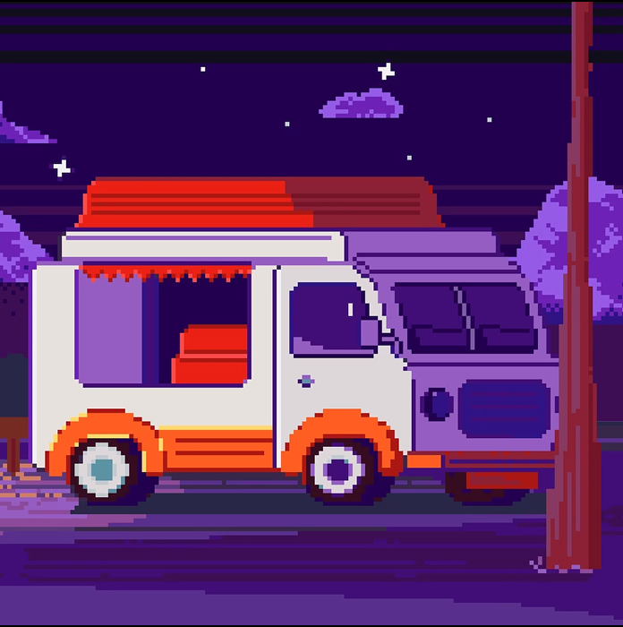

Фритрек и нулевой спринт: Подготовка к работе

Это было самое начало пути. На этом этапе важно было проникнуться основами и настроиться на учёбу. И, возможно, подумать, как новые знания могут повлиять на ваше будущее.
Вот и самое начало обучения. Я решил оставить картинку от Практикума именно тут, потому что дальнейшее повествование и эта проектная, написанная мной, - не только моя заслуга, но и всей команды Практикума.